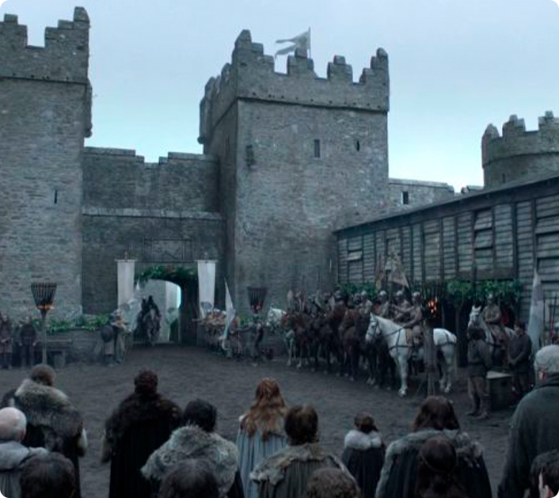
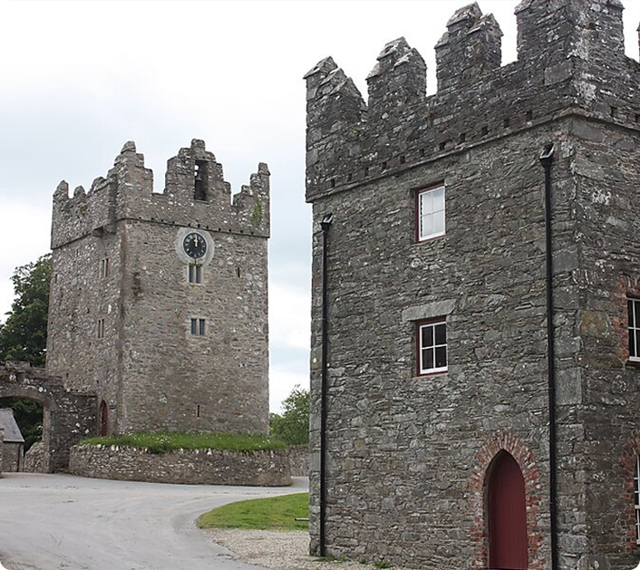

Onde tudo começou...
Na série: Winterfell
O episódio piloto já prende a atenção de quem vê imediatamente. Desde a icônica cena que finaliza o episódio, onde Bran perde o movimento das pernas caindo do parapeito da janela onde presencia uma cena que não deveria, Game of Thrones já se prova uma série acima dos padrões. O castelo e o famoso parapeito onde ocorreu o “acidente” ganharam um novo fluxo de turistas após o sucesso da série.

Na vida real: Castelo Ward
O castelo que serviu de locação para Winterfell durante a primeira temporada de Game of Thrones, na vida real, serviu como mansão que abrigou a família Ward ao longo dos séculos. Hoje é um museu e está aberto para visitação.
- País: Irlanda do Norte
- Endereço: Strangford, Downpatrick BT30 7BA, Reino Unido
- Horário de funcionamento: Todos os dias, de 10h às 18h.
- Preço: £10 - £25
- Visite o site
- Explore no Google Maps
